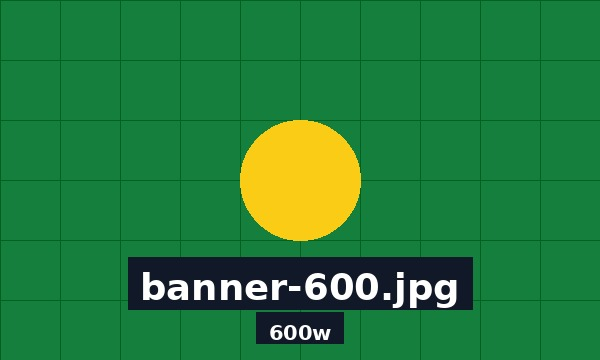

src e srcset em Imagens
No HTML, a tag <img> usa o atributo src
para indicar a imagem principal. Já o atributo srcset serve
para oferecer imagens alternativas ao navegador.
1. Exemplo simples com src
O atributo src indica qual imagem será carregada.
Ele é obrigatório para mostrar a imagem.
2. Exemplo com srcset usando 1x e 2x
O valor 1x representa uma tela comum.
O valor 2x representa telas com maior densidade de pixels,
como telas Retina ou celulares modernos.
Nesse caso, o navegador pode carregar a imagem logo-HD.jpg
em telas mais nítidas.
3. Exemplo com srcset usando largura em w
O valor 300w, 600w ou 1000w
informa ao navegador a largura real de cada arquivo de imagem.
O atributo sizes informa quanto espaço a imagem ocupará
na página. Assim, o navegador escolhe a imagem mais adequada.

Resumo
src é a imagem padrão.
srcset é uma lista de opções.
1x e 2x servem para densidade da tela.
300w, 600w e outros valores com w
indicam a largura real do arquivo.